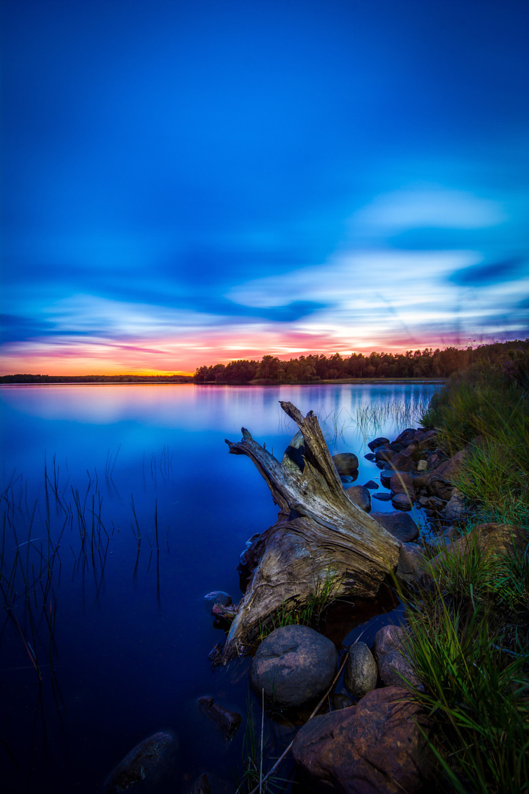

Не далеко от перевала через гору Азикук расположилась красивая дорога...
Пройдя по дороге совсем немного, примерно 437 километров, мы найдем чудесное озеро Куриози

На озере хорошо отдыхать в весенние и летние месяцы. В округе водятся различные животные такие как белки, кошки и различные птицы.


Вечером, после отдыха на озере, мы, перед долгой дорогой домой, мы переходим к водным процедурам
 This is just a nice boy! Look at him and give yourself a couple of minutes to enjoy this view.
This is just a nice boy! Look at him and give yourself a couple of minutes to enjoy this view.